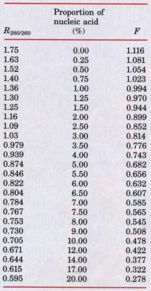

Nucleotides serve a diverse set of important functions in cells. As subunits of nucleic acids they carry genetic information. They are also the primary carriers of chemical energy in cells, structural components of many enzyme cofactors, and cellular second messengers.
A nucleotide consists of a nitrogenous base (purine or pyrimidine), a pentose sugar, and one or more phosphate groups. Nucleic acids are polymers of nucleotides, linked together by phosphodiester bridges between the 5' hydroxyl of one pentose and the 3' hydroxyl of the next. There are two types of nucleic acid: RNA and DNA. The nucleotides in RNA contain ribose, and the common pyrimidine bases are uracil and cytosine. In DNA, the nucleotides contain 2'-deoxyribose, and the pyrimidine bases are generally thymine and cytosine. The primary purines are adenosine and guanine in both RNA and DNA.
Many lines of evidence show that DNA bears genetic information. In particular, the AveryMacLeod-McCarty experiment showed that DNA isolated from one strain of a bacterium can enter and transform the cells of another strain, endowing it with some of the inheritable characteristics of the donor. The Hershey-Chase experiment showed that the DNA of a bacterial virus, but not its protein coat, carries the genetic message for replication of the virus in the host cell.
From x-ray diffraction studies of DNA fibers and the base equivalences in DNA discovered by Chargaff (A = T and G ≡ C), Watson and Crick postulated that native DNA consists of two antiparallel chains in a right-handed double-helical arrangement. Complementary base pairs, A=T and G≡C, are formed by hydrogen bonding within the helix, and the hydrophilic sugar-phosphate backbones are located on the outside. The base pairs are stacked perpendicular to the long axis, 0.34 nm apart; there are about 10 base pairs in each complete turn of the double helix.
DNA can exist in several structural forms. Two variations from the Watson-Crick B-form DNA, the A and Z forms, have been characterized in DNA crystal structures. The A-form helix is shorter and of greater diameter than a B-form helix with the same sequence. The Z form is a lefthanded helix. Some sequence-dependent structural variations cause bends in the DNA. DNA strands with self-complementary inverted repeats can form hairpin or cruciform structures. Polypyrimidine tracts arranged in mirror repeats can take up a triple-helical structure called H-DNA.
Messenger RNA is the vehicle by which genetic information is transferred to ribosomes for protein synthesis. Transfer RNA and ribosomal RNA are also involved in protein synthesis. RNA can be structurally complex, with single RNA strands often folded into hairpins, double-stranded regions, and complex loops.
Native DNA undergoes reversible unwinding and separation (melting) of strands on heating or at extremes of pH. Because G≡C base pairs are more stable than A=T pairs, the melting point of DNAs rich in G≡C pairs is higher than that of DNAs rich in A=T pairs. Denatured singlestranded DNAs from two species can form a hybrid duplex, the degree of hybridization depending on the extent of sequence homology. Hybridization is the basis for important techniques used to study and isolate specific genes and RNAs.
DNA is a relatively stable polymer. Very slow, spontaneous reactions such as deamination of certain bases, hydrolysis of base-sugar N-glycosidic bonds, formation of pyrimidine dimers (radiation damage), and oxidative damage are important because of the very low tolerance of cells for changes in genetic material. DNA sequences can be determined and DNA polymers synthesized using simple protocols involving chemical and enzymatic methods.
ATP is the central carrier of chemical energy in cells, probably reflecting the requirement for binding energy in catalysis. The presence of adenosine in the structure of a variety of enzyme cofactors may also be related to binding energy requirements. Cyclic AMP is a common second messenger produced in response to hormones and other chemical signals. It is formed from ATP in a reaction catalyzed by adenylate cyclase.
General
Friedberg, E.C. (1985) DNA Repair, W.H. Freeman and Company, New York.
A good source for more information on the chemistry of nucleotides and nucleic acids.
Kornberg, A. & Baker, T.A. (1991) DNA Replication, 2nd edn, W.H. Freeman and Company, New York.
The best place to start for learning more about DNA structure.
Saenger, W. (1984) Principles of Nucleic Acid Structure, Springer-Verlag, New York.
A more detailed treatment.
Watson, J.D., Hopkins, N.H., Roberts, J.W., Steitz, J.A., & Weiner, A.M. (1987) Molecular Biology of the Gene, 4th edn, The Benjamin/ Cummings Publishing Company, Menlo Park, CA. Excellent general reference.
Variations in DNA Structure
Dickerson, R.E. (1983) The DNA helix and how it is read. Sci. Am. 249 (December), 94-111.
Htun, H. & Dahlberg, J.E. (1989) Topology and formation of triple-stranded H-DNA. Science 243, 1571-1576.
Rich, A., Nordheim, A., & Wang, A.H.-J. (1984) The chemistry and biology of left-handed Z-DNA. Annu. Rev. Biochem. 53, 791-846.
Wells, R.D. & Harvey, S.C. (eds) (1988) Unusual DNA Structures, Springer-Verlag, New York.
Wells, R.D. (1988) Unusual DNA structures. J. Biol. Chem. 263, 1095-1098.
Minireview; a concise summary.
ATP As Energy Carrier
Jencks, W.P. (1987) Economics of enzyme catalysis. Cold Spring Harb. Symp. Quant. Biol. 52, 6573.
A relatively short article, full of insights.
Historical
Olby, R. (1974) The Path to the Double Helix, University of Washington Press, Seattle.
Sayre, A. (1978) Rosalind Franklin and DNA, W.W. Norton & Co., Inc., New York.
Watson, J.D. (1968) The Double Helix, Atheneum Publishers, New York.
A personal account of the human aspects of the discovery.

2. Nucleotide Structure What positions in a purine ring have the potential to form hydrogen bonds, but are not involved in the hydrogen bonds of Watson-Crick base pairs?
3. Base Sequence of Complementary DNA Strands Write the base sequence of the complementary strand of double-helical DNA in which one strand has the sequence (5')ATGCCCGTATGCATTC(3').
4. DNA of the Human Body Calculate the weight in grams of a double-helical DNA molecule stretching from the earth to the moon (~320,000 km). The DNA double helix weighs about 1× l0-18g per 1,000 nucleotide pairs; each base pair extends 0.34 nm. For an interesting comparison, your body contains about 0.5 g of DNA!
5. DNA Bending Assume that a poly(A) tract five base pairs long produces a bend of about 20°. Calculate the total (net) bend produced in the DNA if the center base pairs (the third of five) of two successive (dA)5 tracts are located (a) 10 or (b) 15 base pairs apart. Assume that there are 10 base pairs per turn in the DNA double helix.
6. Distinction between DNA Structure and RNA Structure Hairpins may form at palindromic sequences in single strands of either RNA or DNA. How is the helical structure of a hairpin in RNA different from that of a hairpin in DNA?
7. Nucleotide Chemistry In the cells of many eukaryotic organisms, there are highly specialized systems that specifically repair G-T mismatches in DNA. The mismatch is repaired to form a G≡C base pair (not A=T). This G-T mismatch repair system occurs in addition to a more general system that repairs virtually all mismatches. Can you think of a reason why cells require a specialized system to repair G-T mismatches?
8. Nucleic Acid Structure Explain why there is an increase in the absorption of LTV light (hyperchromic effect) when double-stranded DNA is denatured.
9. Base Pairing in DNA In samples of DNA isolated from two unidentified species of bacteria, adenine makes up 32 and 17%, respectively, of the total bases. What relative proportions of adenine, guanine, thymine, and cytosine would you expect to find in the two DNA samples? What assumptions have you made? One of these bacteria was isolated from a hot spring (64°C). Which DNA came from this thermophilic bacterium? What is the basis for your answer?